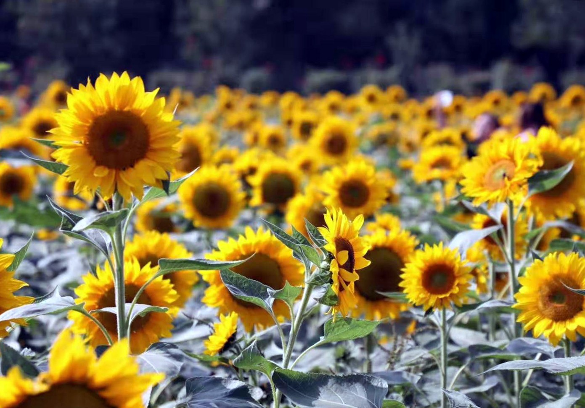

百合花花展
时间：持续到10月31日
亮点：包含红、黄、橙、白、粉五个色系，有红色的‘蒙特祖玛’、黄色的‘简单阳光’、橙色的‘简爱’、白色的‘白色珍珠’、粉色的‘优雅莲花’等共计15个品种，一万六千株的庭院百合，占地面积超过一千平方米。
向日葵花展
时间：持续到10月31日
亮点：包含红、黄、橙、白、粉五个色系，有红色的‘蒙特祖玛’、黄色的‘简单阳光’、橙色的‘简爱’、白色的‘白色珍珠’、粉色的‘优雅莲花’等共计15个品种，一万六千株的庭院百合，占地面积超过一千平方米。

观赏草展
时间：9-11月
亮点：赏草是一类形态美丽、色彩丰富、以茎秆与叶丛为主要观赏部位的草本观赏植物的统称。园区以粉黛乱子草、糖蜜草、紫叶狼尾草、金红羽狼尾草四种为主展品种。
彩叶植物展
时间：11—12月
亮点：植物园内彩叶植物园现有银杏、北美红枫、鸡爪槭、红枫、花叶锦带、金叶六道木、南天竹、熊掌木、金边大叶黄杨柱等品种。